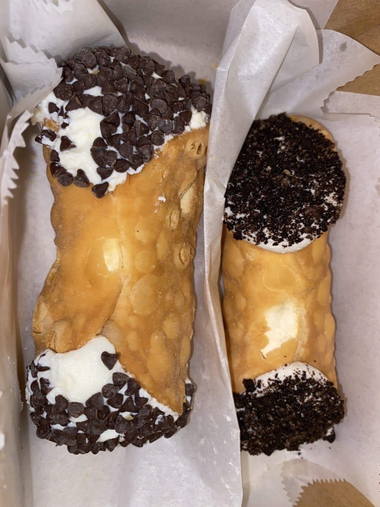
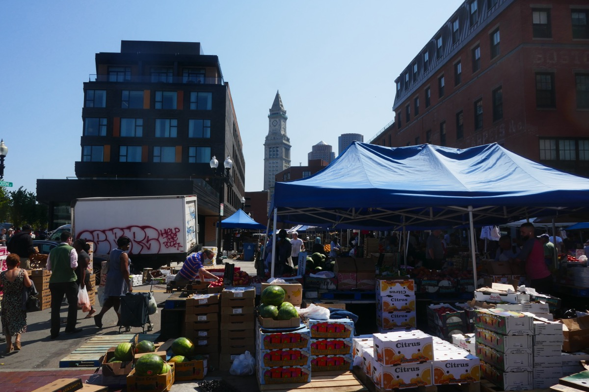
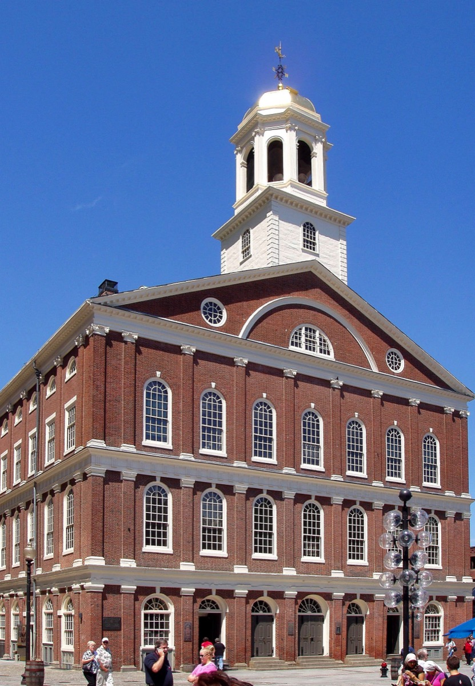
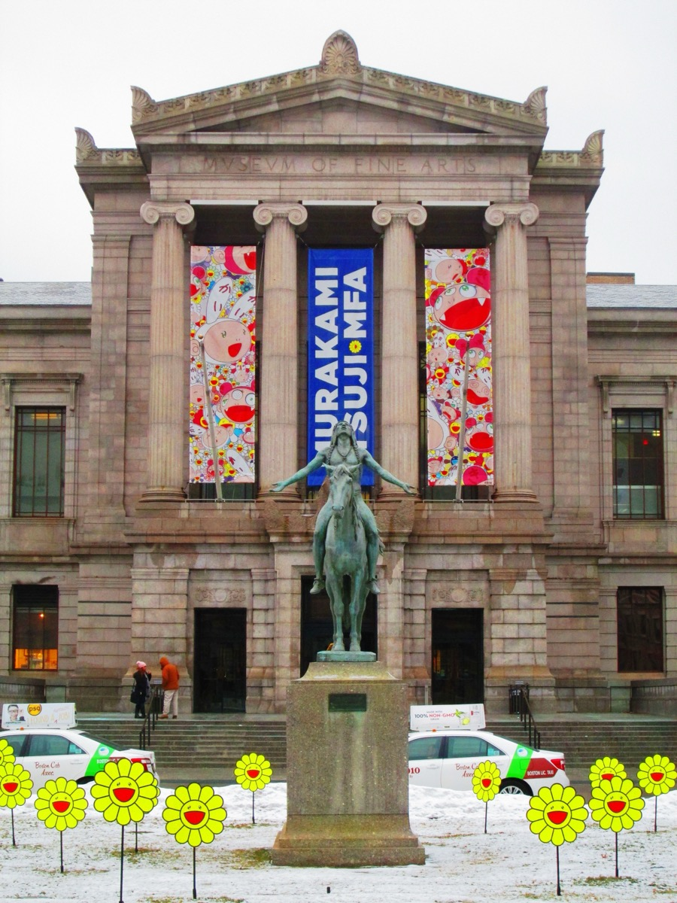
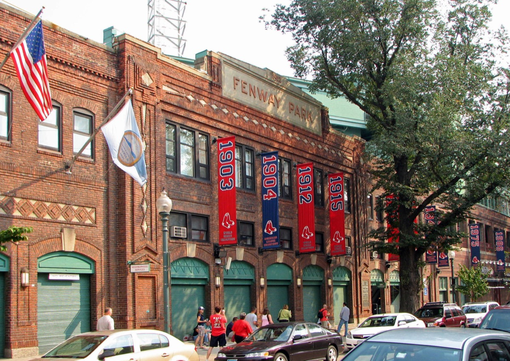
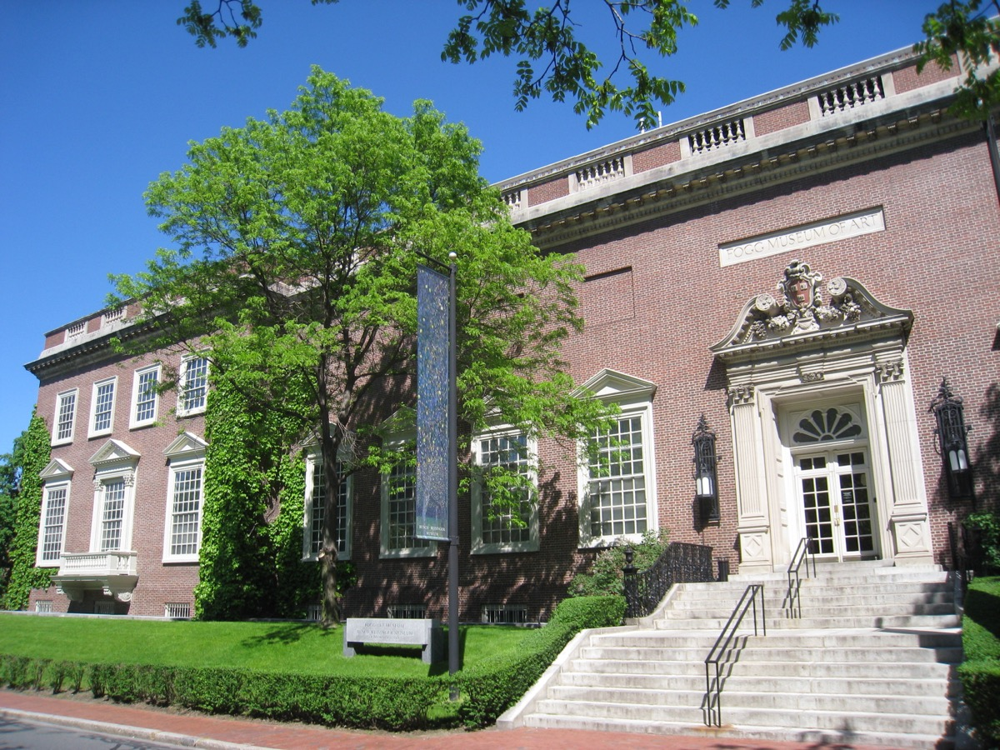

The second weekend of September is close to the best weekend of the year in Boston. Students are back, so the city is at full volume; the humidity is gone but the harbor is still warm enough for a ferry; the Red Sox are playing their last home stretch at Fenway; the North End's feast season has one or two weekends left; and SoWa, Haymarket and the farmers markets are all still running. The foliage hasn't started yet, which means the leaf-peeping crowds haven't either.
This page is our standing answer to the question "what should I do in Boston this weekend?" We rebuild it every week: the Friday-to-Sunday plan below is the version for the weekend of September 11 to 13, 2026, and the recurring events, picks by interest and rainy-day fallback stay useful whichever weekend you read it. Everything has an address and the nearest T stop, and nothing here requires a car.
If you're visiting for longer, our Boston weekend itinerary is the hour-by-hour version, and the things to do in Boston hub has the full set of guides.
The short answer
The 10 best things to do in Boston this weekend
01
The weekend plan: Friday, Saturday, Sunday
This is the plan we'd give a friend arriving Friday afternoon. Swap blocks freely; each one is a self-contained half day and all of them are reachable on the T. Nearest stops are in the table, addresses are in the sections that follow.
| When | Friday | Saturday | Sunday |
|---|---|---|---|
| Morning | — | Haymarket, then the Freedom Trail from Faneuil Hall to the North End (Haymarket, Orange/Green) | Brunch in the South End, then SoWa Open Market (Tufts Medical Center, Orange, or Back Bay) |
| Afternoon | Arrive; walk the Harborwalk from the Seaport to Christopher Columbus Park (Courthouse, Silver) | Ferry to Spectacle Island from Long Wharf, or the MFA if it's cloudy (Aquarium, Blue / Museum of Fine Arts, Green E) | Red Line to Harvard Square: bookstores, the Yard, Harvard Art Museums (Harvard, Red) |
| Evening | Dinner in the North End; cannoli on Hanover Street; a drink in the Seaport or Beacon Hill (Haymarket) | Red Sox at Fenway if there's a home game; otherwise the South End or Cambridge for dinner and a show (Kenmore, Green) | Sunset from the Esplanade dock, then an early dinner in Back Bay or Beacon Hill (Charles/MGH, Red) |
The weekend of September 11–13: Fenway has home games, so Saturday evening is a ballgame. The Head of the Charles is not until October 16–18; the North End's Saint Rosalie feast typically falls this weekend, so check before you commit to Friday evening on Hanover Street, which will be closed to traffic and very full.
02
What happens in Boston every weekend
These are the markets, games and open days that repeat weekend after weekend. If a specific event falls through, one of these will fill the slot.
| What | When | Where | Nearest T stop |
|---|---|---|---|
| Haymarket produce market | Fri and Sat, roughly 7am–7pm | Blackstone St, Downtown | Haymarket (Orange/Green) |
| SoWa Open Market | Sundays 11am–4pm, May–October | 460 Harrison Ave, South End | Tufts Medical Center (Orange), 12-min walk |
| Copley Square Farmers Market | Tuesdays and Fridays, May–November | Copley Square, Back Bay | Copley (Green) |
| Red Sox at Fenway Park | Roughly half the weekends, April–September | 4 Jersey St, Fenway | Kenmore (Green) |
| Harvard Art Museums | Free every day, Tue–Sun 10–5 | 32 Quincy St, Cambridge | Harvard (Red) |
| ICA Boston free night | Thursdays 5–9pm (start your weekend early) | 25 Harbor Shore Dr, Seaport | Courthouse (Silver) |
| MIT Museum free day | Last Sunday of the month | 314 Main St, Cambridge | Kendall/MIT (Red) |
| Harbor Islands ferry | Daily through early October, weekends only after | Long Wharf North | Aquarium (Blue) |
| Boston Public Market | Daily, 8am–6pm (Sun from 10am) | 100 Hanover St | Haymarket (Orange/Green) |
| Harvard Square street life | Every day, best Sat and Sun afternoons | Around Harvard station | Harvard (Red) |
The complete schedule of free museum days is in free museum days in Boston.
03
Friday night in Boston
Dinner and a cannoli in the North End

Friday night in the North End is the standard first-night Boston experience and it deserves to be. Reservations are hard on Fridays, so book ahead or eat early; if you can't get one, the smaller places on Salem Street and Prince Street take walk-ins more readily than Hanover Street does. After dinner, the choice between Mike's Pastry and Modern Pastry for a cannoli is a real Boston argument. We settle it in the best cannoli in Boston, and the full restaurant list is in the best North End restaurants.
A drink with a view in the Seaport
The Seaport on a Friday is loud and young, and the rooftops are the reason to go. The Lookout at the Envoy Hotel has the skyline across Fort Point Channel; Trillium's beer garden on Thomson Place is calmer. If you'd rather sit by the water without a line, Fan Pier Park is free and has the same view from ground level. More in the best rooftop bars in Boston.
Comedy or live music
Friday is the best night for stand-up at Laugh Boston in the Seaport or Improv Asylum on Hanover Street, and Wally's Cafe in the South End has had live jazz every night since 1947 with no cover. Our guide to things to do in Boston at night covers all of the rooms and how to get home after the last train, which leaves around 12:30am.
04
Saturday in Boston
Haymarket at 8am

Haymarket is an open-air produce market that has run on the same block since 1830. Vendors shout prices, boxes of peaches go for a few dollars, and the whole thing is over by dinner. It is the cheapest fruit in the city and one of the last pieces of old Boston still doing exactly what it was built to do. Go early for the best produce and a coffee from the Boston Public Market next door, which also has bathrooms and seating.
The Freedom Trail from Faneuil Hall to Copp's Hill

The full 2.5-mile Freedom Trail takes most of a day; the north half is the good half for a weekend morning. From Faneuil Hall, follow the red line through the North End to the Paul Revere House, the Old North Church and Copp's Hill Burying Ground, which has a view over the harbor to Charlestown. You'll end up back on Hanover Street around lunch. The full stop-by-stop route is in our Freedom Trail guide.
Ferry to Spectacle Island

Spectacle Island is a 20-minute ferry ride from Long Wharf and has a swimming beach, five miles of trails and the highest point in the harbor, with a view back at the whole skyline. September is the best month: the water is at its warmest, the summer crowds are gone and the ferry still runs daily until early October. Bring food; the island café is limited. Georges Island, with Fort Warren, is the other option on the same ticket.
A morning at the Museum of Fine Arts

The MFA is huge and weekend afternoons are busy, so arrive at opening and choose a wing: the Art of the Americas for Copley, Sargent and Homer; the Japanese galleries and the temple room; or the Egyptian collection. Two hours is a good visit. The Isabella Stewart Gardner Museum is a five-minute walk away and the two together make a full rainy Saturday. See the best museums in Boston.
A Red Sox game at Fenway Park

If the Red Sox are home, Saturday at Fenway is the plan. The park opened in 1912 and a game there is the one Boston experience that isn't replicated anywhere else. Get there 90 minutes early to walk Jersey Street, which is closed to traffic on game days, and eat a Fenway Frank inside. If they're away, the Fenway bars on Lansdowne Street still fill up for the broadcast. September 11–13, 2026 is a home weekend. Our Fenway-Kenmore guide covers the neighborhood.
05
Sunday in Boston
SoWa Open Market
SoWa is Boston's Sunday: an artists' market with about 200 makers, a farmers market, a row of food trucks, a beer garden, and a vintage market inside a former power station. It fills up by 1pm. Pair it with brunch on Tremont Street or Shawmut Avenue first, and walk over through Union Park and the brownstone streets of the South End. It closes for the season after the last Sunday in October, so September is the time. More in the South End guide and the best brunch in Boston.
Harvard Square and the Harvard Art Museums

Sunday afternoon in Harvard Square is bookstores, street musicians, the Yard, and the Harvard Art Museums, which have been free to everyone since 2023. The Harvard Book Store and Grolier Poetry Book Shop are the essential stops; the Weeks Footbridge over the Charles is a five-minute walk south and the best place to end. Full guide: Harvard Square.
Sunset on the Esplanade

End the weekend on the dock by the Hatch Shell, facing west over the Charles toward Cambridge. Sailboats coming in, rowers heading home, the Citgo sign lighting up behind you. From here it's a 10-minute walk into Beacon Hill for an early dinner on Charles Street, and the Red Line is right there for the trip back.
Brunch, then the Public Garden
The lazy Sunday version: a late brunch in Back Bay or Beacon Hill, then the Public Garden and the Ducklings, the Swan Boats (a few dollars, last weeks of the season), and a walk down Commonwealth Avenue Mall. It is under a mile and it takes as long as you want it to.
06
Weekend picks by interest
| If you want… | Do this | Guide |
|---|---|---|
| History | Freedom Trail, USS Constitution in Charlestown (free to board, bring ID), the Old State House | Freedom Trail guide |
| Food | North End Friday, Haymarket Saturday, South End brunch Sunday, a lobster roll on the waterfront | Food & drink in Boston |
| Water | Harbor Islands ferry, Charlestown ferry from Long Wharf, kayak rental on the Charles at Kendall | Outdoor things to do |
| Art | MFA, Gardner, ICA, Harvard Art Museums, SoWa galleries on Sunday | Best museums |
| Nightlife | Seaport rooftops, Central Square, Wally's, comedy in the Seaport or North End | Boston at night |
| A date | Public Garden, dinner and a view, the Esplanade at sunset | Date ideas in Boston |
| Kids | Museum of Science, Ducklings, Castle Island, the Aquarium and the harbor seals outside it | Boston with kids |
| Spending nothing | Freedom Trail, Harborwalk, Harvard Art Museums, Haymarket, SoWa, Esplanade | Free things to do |
| Getting out of town | Commuter rail to Salem (30 min), ferry to Provincetown (90 min), train to Providence (45 min) | Day trips from Boston |
07
If it rains this weekend
September in Boston averages about nine rainy days, and the remnants of a tropical storm can wipe out a whole weekend. The good news is that Boston is a museum city and a library city, and its two main malls are connected by enclosed walkways.
Saturday, wet version: the Museum of Fine Arts at opening (465 Huntington Ave, Museum of Fine Arts stop on the Green E), then the Isabella Stewart Gardner Museum (25 Evans Way) next door, with the glass-roofed courtyard that is at its best in rain. Lunch at Time Out Market (401 Park Dr, Fenway station) which is a five-minute walk. In the afternoon, the Boston Public Library's Bates Hall and courtyard (700 Boylston St, Copley), then the covered walk from Copley Place through the Prudential Center to the View Boston observation deck, which is worth doing in bad weather for the drama.
Sunday, wet version: the Boston Public Market and Quincy Market (Haymarket stop) for a late breakfast, the New England Aquarium (1 Central Wharf, Aquarium stop) if you have kids or patience for lines, and an afternoon film at the Coolidge Corner Theatre in Brookline (290 Harvard St, Coolidge Corner on the Green C) or the Brattle in Harvard Square (40 Brattle St). Both are independent cinemas and both have bars nearby for after.
The full rain plan, with escape rooms, bowling and cafés, is in things to do in Boston when it rains.
08
Boston this September: what's on and what's changing
The last of the North End feasts
The North End's Italian religious feasts run every weekend from late July, with Saint Anthony's at the end of August the biggest. Saint Rosalie's feast in the second weekend of September is usually the last: a procession, a street closed to traffic, sausage and pepper stands, and a brass band. If you're reading this the week of September 8, this is your last chance until next summer. Check the North End feast schedule before you go, since dates shift year to year.
Fall foliage is just starting
The first color shows in the second half of September in the Arnold Arboretum and along the Esplanade, but Boston's peak is mid-to-late October and the real show is north of the city. If you came for leaves and it's early September, the Arboretum's Peters Hill still has the best skyline view in the city, and the Public Garden's trees turn first. See things to do in Boston in fall.
Head of the Charles: October 16–18
The world's largest two-day rowing regatta is not this weekend, but if you're planning ahead: it runs the third weekend of October, brings about 11,000 rowers and a few hundred thousand spectators to the riverbanks, and is free to watch from the Weeks Footbridge, the Cambridge side near Harvard, or the Boston side along the Esplanade. Hotels in Cambridge fill up months ahead.
End-of-season dates to know
Several summer things end in the next few weeks. The Swan Boats in the Public Garden stop for the year in mid-September. The Harbor Islands ferry goes to weekend-only service after Columbus Day and stops in mid-October. The Red Sox regular season ends the last weekend of September. SoWa's last Sunday is at the end of October. Hatch Shell events wind down after Labor Day. Rooftop bars generally stay open through October, with heaters.
09
Weekend logistics
Getting around. The T runs from about 6am until roughly 12:30am on weekends, and a ride is $2.40 with a contactless card or CharlieCard; a 7-day pass is $22.50. Weekend track work is common, so check the MBTA alerts on Friday for shuttle buses replacing trains on part of a line. Everything in the Friday-to-Sunday plan above is in the central neighborhoods, which are close enough to walk between: Downtown to the North End is 10 minutes, to the Seaport 15, to Copley 20.
Reservations. Book Friday and Saturday dinner in the North End, the South End and the Seaport a week ahead in September. Museums don't require timed tickets on most weekends but the ICA and the Gardner get crowded after 1pm. Fenway tickets for a September weekend with a pennant race can sell out, so buy before Friday.
Driving. Don't, if you can avoid it. Weekend parking downtown is expensive and the North End and Fenway are effectively closed to visitor cars on Friday nights and game days. If you must, park at a garage near a Green Line stop and take the train. See Boston without a car and getting around Boston.
FAQ
Boston this weekend: common questions
What is there to do in Boston this weekend for free?
Every weekend: the Freedom Trail, the Harborwalk, the Public Garden, Haymarket on Friday and Saturday, and Harvard Square. From May through October, SoWa Open Market on Sunday. The Harvard Art Museums are free every day, and the ICA is free on Thursday evenings if you can start the weekend early. More in free things to do in Boston.
Is the SoWa market open this weekend?
SoWa Open Market runs every Sunday from early May through the end of October, 11am to 4pm, at 460 Harrison Avenue in the South End. In September it is open. It closes for the season after the last Sunday in October and reopens the following May.
What is the best way to get around Boston on a weekend?
Walk and take the T. Weekend subway service runs from about 6am until roughly 12:30am, and a single ride is $2.40. Downtown, the North End, Beacon Hill, Back Bay and the Seaport are all within a 30-minute walk of each other. Avoid driving into the North End or Fenway on a game day.
Is Boston busy on weekends in September?
Yes. September is one of Boston's busiest months, with students back, conventions in the Seaport and the first foliage visitors. Book restaurants for Friday and Saturday nights, go to museums early, and expect lines at the Duck Tours and at the popular North End bakeries in the afternoon.
What can I do in Boston this weekend if it rains?
The Museum of Fine Arts, the ICA, the Isabella Stewart Gardner Museum, the Boston Public Library, the Boston Public Market and Quincy Market, the connected Prudential Center and Copley Place malls, and the Coolidge Corner and Brattle cinemas are all fully indoor and open on weekends.
Are the Red Sox playing at Fenway this weekend?
The Red Sox regular season runs from late March or early April through the last weekend of September, with roughly half of the weekends at home. Check the schedule on the MLB site before you plan; if there is a home game, Kenmore Square and Lansdowne Street will be crowded three hours before first pitch.